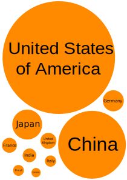

The data used for the following visualizations was taken from the UN website and was modified to focus on GDPs of the top 10 countries with the largest economies in the year 2016. They are:
Brazil
Canada
China
France
Germany
India
Italy
Japan
United Kingdom
United States of America
1) GDP Bubble Chart (using Inkscape generated svg)
The following bubble chart was created using Inkscape. The diameter of each bubble was set in centimetres as the GDP in trillion USD in 2016. The data used to generate this bubble chart can be found here

2) GDP Bubble Chart (using svg element in HTML)
The following bubble chart was created by taking the coordinate information (converted from centimetre to px) from Inkscape. The chart was created as an svg element in html and the coordinate information was manually fed in.
3) GDP Bubble Chart (using javascript)
The following bubble chart was created by taking the coordinate information (converted from centimetre to px) from Inkscape, similar to the previous chart. This chart however, was created using javascript to retrieve an svg element and add circles and text to it. The information for the circles and text was stored in javascript program itself as a list of objects.